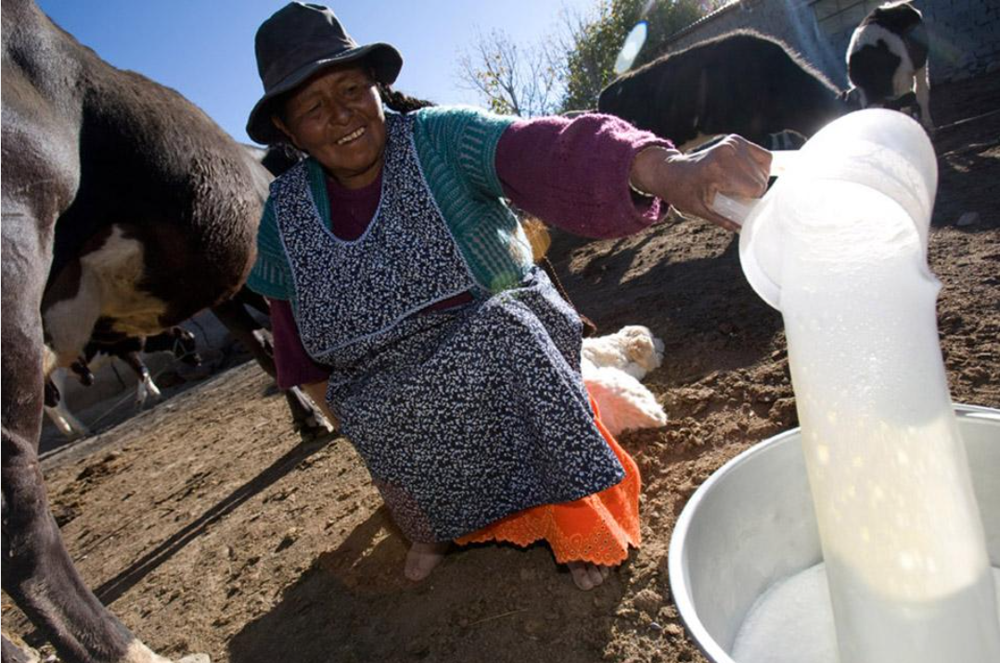

EcoLact
PLATAFORMA DE GESTIÓN LÁCTEA
EcoLact
Tecnología para una gestión láctea más eficiente
Plataforma web y móvil diseñada para digitalizar el acopio de leche, controlar su calidad y gestionar la producción, las ventas y los pagos a proveedores en Huata, Puno – Perú.
Conoce EcoLact
EcoLact integra los procesos operativos y administrativos de un centro de acopio de leche en una única plataforma digital.
La solución permite organizar a los proveedores y acopiadores, registrar las entregas de leche, evaluar su calidad y realizar el seguimiento económico de cada operación.
Su propósito es mejorar la trazabilidad, reducir los errores de registro y facilitar el acceso a información confiable para la toma de decisiones.
Explora la documentación
Conoce los componentes del sistema, sus procesos operativos y las decisiones técnicas que permiten su funcionamiento.
-

Sistema
Conoce los objetivos, actores, módulos y reglas de negocio de EcoLact.
-
Flujos de negocio
Descubre cómo se realizan el acopio, los análisis, la producción y los pagos.
-
Arquitectura
Explora Laravel, Kotlin Multiplatform, la base de datos y la integración mediante API REST.
¿Cómo funciona EcoLact?
El proceso comienza cuando el acopiador registra la leche entregada por un proveedor. Posteriormente, se realiza el análisis de calidad y se determina la valorización correspondiente.
Finalmente, las entregas valorizadas se consideran para generar las liquidaciones y registrar los pagos.
flowchart LR
A["Proveedor"] --> B["Acopio de leche"]
B --> C["Análisis de calidad"]
C --> D{"Resultado"}
D -->|Aceptada| E["Valorización"]
D -->|Observada| F["Revisión y reglas"]
D -->|Rechazada| G["Restricción / sanción"]
F --> E
E --> H["Liquidación"]
H --> I["Pago"]
I --> J["Consulta del proveedor"]Trazabilidad del proceso
Cada etapa conserva información relacionada con el proveedor, la entrega y sus resultados. Esto permite consultar el historial de operaciones y verificar el estado de los pagos.
Procesos complementarios
Además del acopio y la liquidación, EcoLact incorpora funciones para administrar la producción, los insumos, el inventario, las ventas y los movimientos de caja.
-
Producción
Gestión de recetas, lotes de producción y productos derivados de la leche.
-
Inventario e insumos
Control de compras, insumos disponibles, movimientos y existencias.
-
Ventas y finanzas
Registro de ventas, compradores, ingresos, egresos y pagos.
Ecosistema tecnológico
EcoLact combina una plataforma web y una aplicación móvil que se comunican mediante una API REST desarrollada con Laravel.
flowchart TB
W["Panel web<br/>Laravel + Blade"]
M["Aplicación móvil<br/>Kotlin Multiplatform"]
A["Backend Laravel<br/>Controladores y API REST"]
U["Casos de uso<br/>Application"]
D["Dominio<br/>Entidades y reglas"]
R["Infraestructura<br/>Repositorios"]
DB[("MySQL")]
W --> A
M -->|"HTTPS / JSON / Sanctum"| A
A --> U
U --> D
U --> R
R --> DB-
Plataforma web
Desarrollada con PHP y Laravel. Permite gestionar los procesos administrativos y operativos mediante paneles según el rol del usuario.
-
Aplicación móvil
Desarrollada con Kotlin Multiplatform. Facilita el acceso a las funciones de campo mediante interfaces adaptadas al dispositivo.
-
API REST
Expone servicios bajo
/api/v1y utiliza Laravel Sanctum para la autenticación mediante tokens.
Explorar la arquitectura técnica
Documentación para desarrolladores
La documentación técnica también incluye información necesaria para comprender, configurar, mantener y verificar el funcionamiento del proyecto.
-
Desarrollo
Estructura del repositorio, instalación del backend, configuración de la aplicación móvil y convenciones de desarrollo.
-
Pruebas
Estrategia de validación, pruebas automatizadas, integración entre componentes y evidencias del funcionamiento.
Acerca de EcoLact
EcoLact es un proyecto académico de la Escuela Profesional de Ingeniería de Sistemas de la Universidad Peruana Unión, desarrollado durante el semestre 2026-II.
La plataforma toma como contexto las actividades de acopio, evaluación de calidad y transformación de leche en el distrito de Huata, Puno.
Su desarrollo integra conocimientos de ingeniería de software, arquitectura de aplicaciones, bases de datos, desarrollo web y aplicaciones móviles.